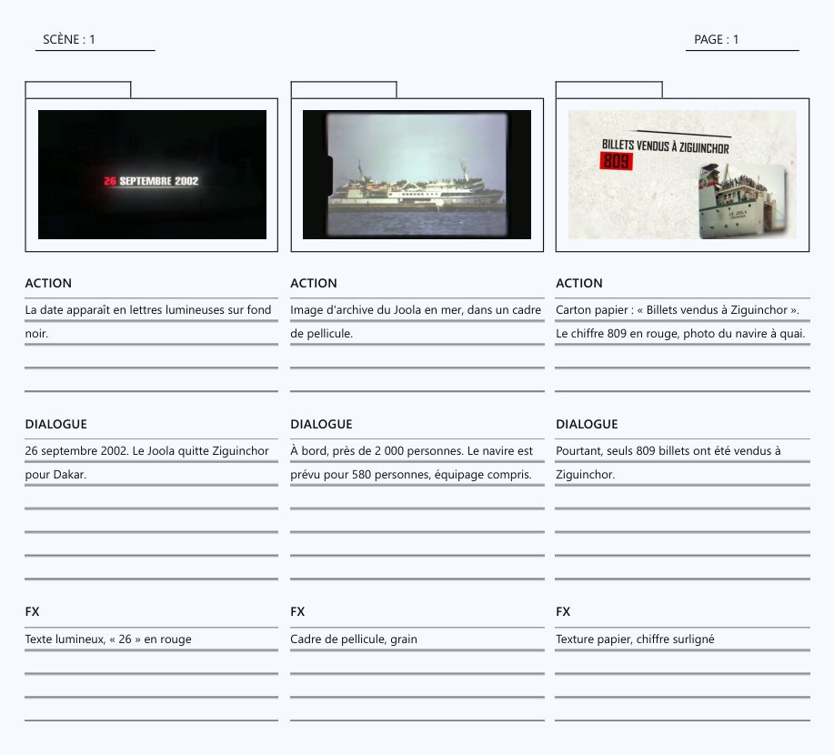
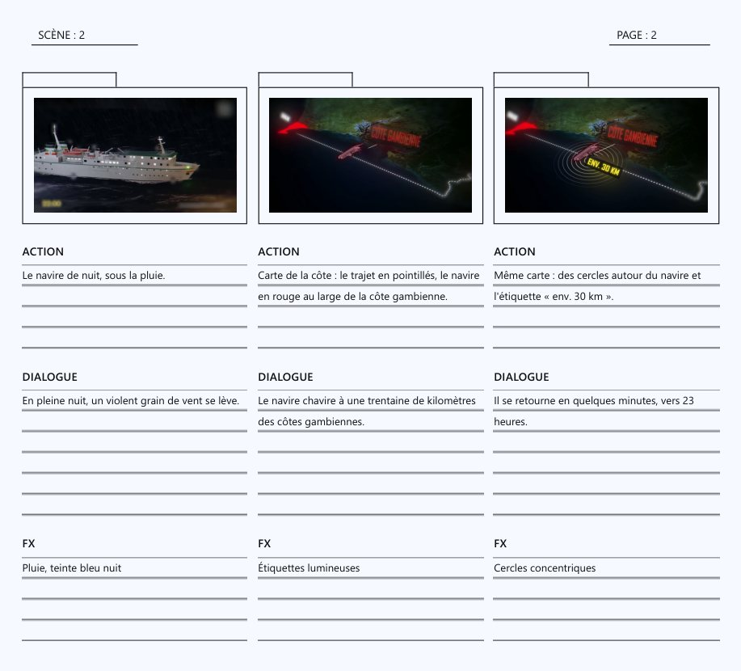
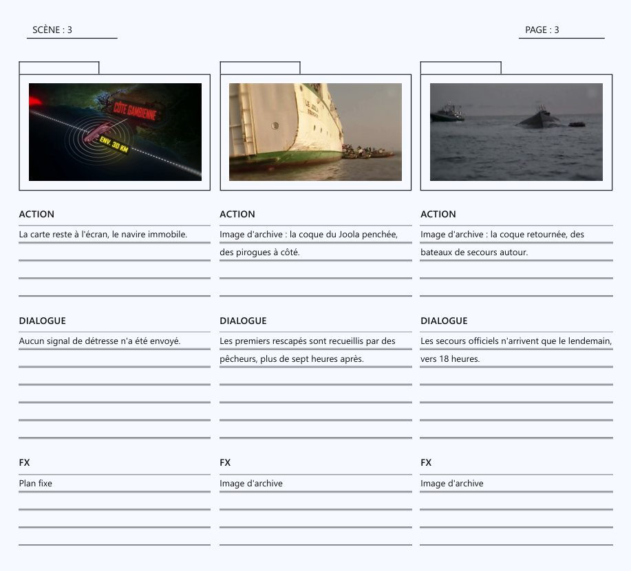
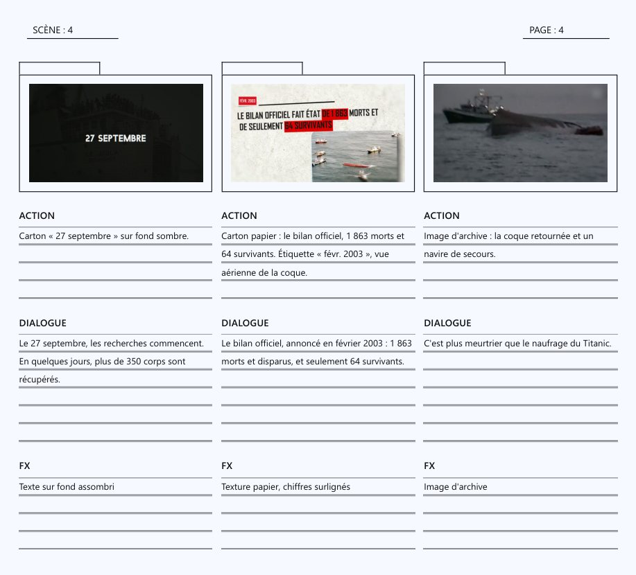
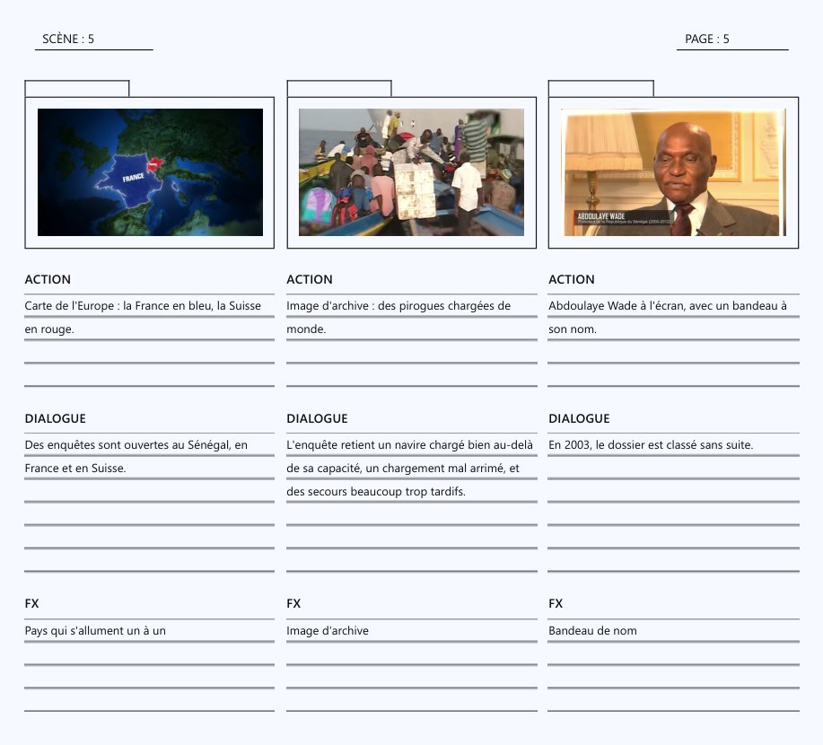
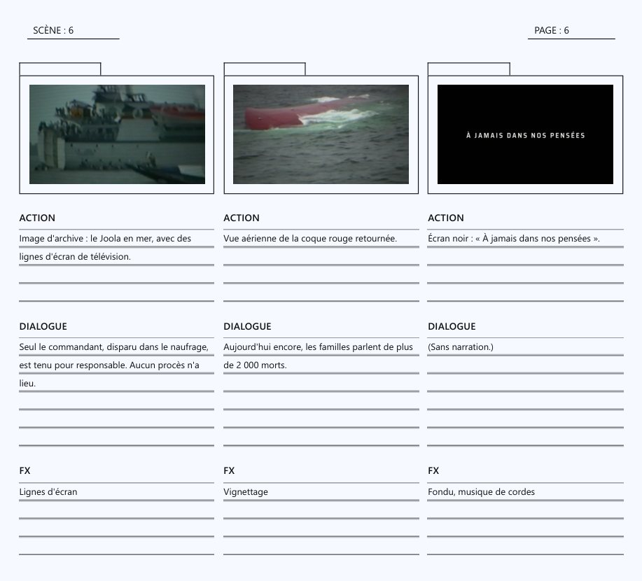

Le Joola
- Catégorie
- Vidéo
- Équipe
- Projet solo
- Rôle
- Scénarisation, visuels et montage
- Voix off
- Voix générée par IA
Le scénarimage
Le film tient en 18 plans. Pour chacun, le scénarimage note l'action à l'écran, la narration et les effets. Je l'ai mis à jour après avoir refait la vidéo, pour qu'il corresponde à la version finale. Cliquez sur une page pour l'agrandir, puis passez d'une page à l'autre avec les flèches.





